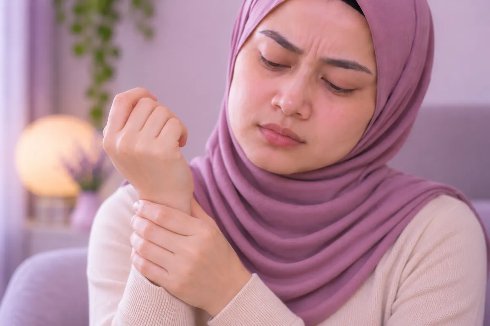

Bahu, lengan & tangan
24 kondisi dan gejala
 Cedera pleksus brakialis (saraf bahu dan lengan)
Cedera pleksus brakialis (saraf bahu dan lengan)- Cedera rotator cuff
 Cedera saraf medianus
Cedera saraf medianus- Cedera saraf radialis (pergelangan tangan lunglai)
- Cedera saraf ulnaris (sisi kelingking)
 Cedera tangan
Cedera tangan Dislokasi bahu
Dislokasi bahu Dislokasi sebagian siku (kepala radius)
Dislokasi sebagian siku (kepala radius)- Dislokasi sendi bahu atas (sendi AC)
- Dislokasi siku
- Jari tangan putus
 Patah Galeazzi (lengan bawah dan sendi pergelangan)
Patah Galeazzi (lengan bawah dan sendi pergelangan)- Patah jari tangan
- Patah lengan atas dekat bahu
- Patah lengan atas tepat di atas siku
- Patah lengan bawah
- Patah pergelangan tangan (radius distal)
- Patah tulang belikat
- Patah tulang lengan atas
- Patah tulang lengan atas (batang)
- Patah tulang pergelangan tangan (karpal)
 Pergelangan tangan terkilir
Pergelangan tangan terkilir- Siku tenis
- Sindrom lorong karpal